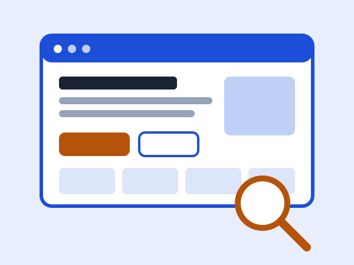

Heurísticas de Nielsen
As 10 regras de usabilidade com resumo e exemplo aplicado neste próprio site.
Em construção · etapa 2 de 3
O UX Lab reúne explicações, exemplos e uma busca para você entender como criar interfaces fáceis de usar e para todas as pessoas.

Três áreas para estudar e praticar.
As 10 regras de usabilidade com resumo e exemplo aplicado neste próprio site.
UX, UI, WCAG e psicologia das cores, mais um glossário com busca instantânea.
Use o botão no canto da tela: modo escuro, alto contraste, fonte maior e menos movimento.
Como a pessoa se sente e se consegue concluir o que veio fazer. Exemplo: achar a pesquisa em dois cliques.
O que a pessoa vê e toca: cores, botões, tipografia e layout. Exemplo: botão azul com texto branco legível.
É bonita (UI) e funciona bem (UX). Uma sem a outra deixa o produto incompleto.